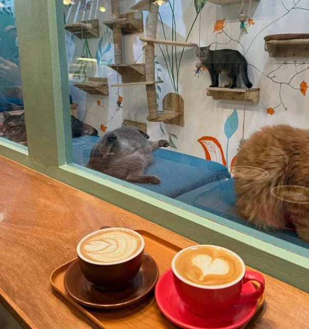

PARAÑAQUE CITY · BEST SOUTH HANGOUT
Coterie Cat Cafe
Coterie Cat Cafe is my pick for a slow work session or an easygoing date in the South. Its mellow, home-like atmosphere combines coffee, light bites, comfortable seating, and roaming cats without making the experience feel rushed. I recommend it to visitors who want a flexible all-day café where they can work, talk, or simply unwind with quiet feline company.
| Address | 272 Aguirre Avenue, BF Homes, Parañaque City |
|---|---|
| Opening hours | Check the café's latest official listing before visiting. |
| Atmosphere | Mellow, home-like, and co-working friendly |
| Best for | Quiet work, casual dates, and South-area visitors |